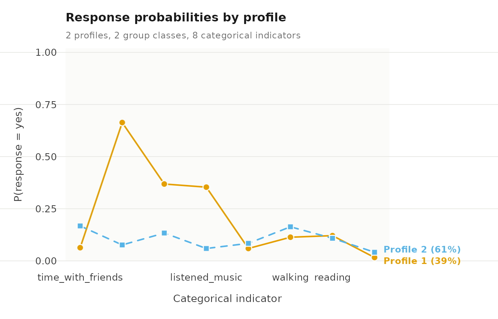
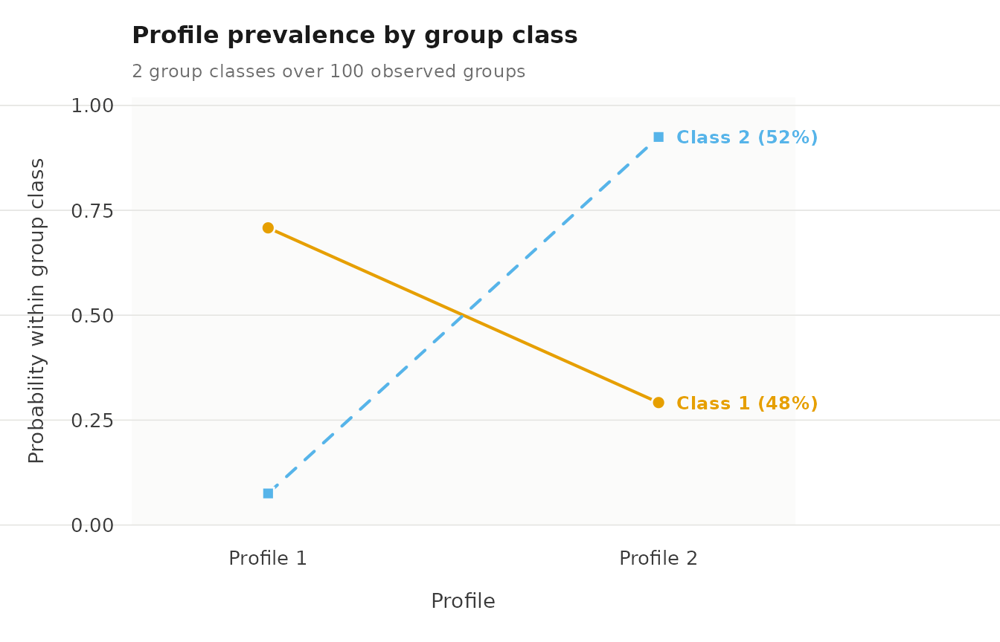

Two-level latent class analysis
Written by Mohammed Saqr and Sonsoles López-Pernas
Source:vignettes/lca.Rmd
lca.RmdTwo-level latent class analysis (LCA) is used when the indicators are
categorical: yes/no answers, ratings on a few ordered options, or
unordered choices. Like multilevel latent profile analysis, it estimates
latent classes of observations, called profiles in the output, and
latent group classes that differ in how probable each profile is for
their observations. The difference is in how a profile is described: by
the probability of each answer to each item, instead of a mean and a
variance. multilca() fits LCA, treating every indicator as
categorical; multilpa() with some indicators named in
categorical fits a mixed model with both kinds of
indicator.
What the package supports
- Item types. Binary, ordinal and nominal items share one parameterization: a free probability for every category in every profile. Numeric, integer, logical, character and factor columns are accepted; factor levels keep their order, other types are sorted.
- Mixed measurement. Continuous and categorical indicators in one model.
-
Missing answers.
missing = "fiml"uses the observed answers of each row. -
Standard errors. Observed-information and robust
(
vcov_type = "robust") standard errors throughparameter_inference(). -
Model comparison.
enumerate_classes()and, for complete data,bootstrap_lrt(). -
External variables.
three_step()andr3step()work on a categorical fit. -
Membership covariates.
profile_covariatesandgroup_covariateswork with categorical indicators; standard errors are not available for these fits. -
Transitions.
lta()accepts categorical indicators. -
Bounds.
min_probabilitykeeps every response probability above a lower bound.
Data
student_esm holds experience-sampling data: 2,582
prompts from 100 university students, answered at times when the student
had not been studying. student identifies the group. Eight
yes/no items record the leisure activities done since the previous
prompt, and four items rate affect from 1 to 7. day is the
study day, from 0 to 13. ?student_esm gives the source.
To keep the example short, we call subset() with
day <= 6, which keeps the first week and all 100
students.
first_week <- subset(student_esm, day <= 6)The eight activity items are used in several fits, so we store their names once.
activities <- c("time_with_friends", "on_social_media", "tv_video_games",
"listened_music", "sports", "walking", "reading",
"part_time_job")Fitting the model
To fit the model, we call multilca() with
vars for the categorical indicators, id for
the group, n_profiles, n_group_classes,
n_starts, seed, and tol for a
tighter convergence tolerance, which standard errors need.
lca <- multilca(first_week, vars = activities, id = "student",
n_profiles = 2, n_group_classes = 2, n_starts = 10,
tol = 1e-10, seed = 1)
lca
#> Two-level latent profile analysis: 2 profiles, 2 group classes
#> 1422 individuals in 100 groups; varying diagonal residual covariance (VVI)
#> Log likelihood: -4315.734845 | AIC: 8669.470 | BIC (groups): 8718.968
#> Converged: TRUE | iterations: 89 | best start: 8/10
#>
#> profile indicator category probability threshold
#> 1 time_with_friends no 0.8324 1.603
#> 2 time_with_friends no 0.9368 2.696
#> 1 time_with_friends yes 0.1676 NA
#> 2 time_with_friends yes 0.0632 NA
#> 1 on_social_media no 0.9235 2.491
#> 2 on_social_media no 0.3365 -0.679
#> 1 on_social_media yes 0.0765 NA
#> 2 on_social_media yes 0.6635 NA
#> 1 tv_video_games no 0.8664 1.870
#> 2 tv_video_games no 0.6313 0.538
#> 1 tv_video_games yes 0.1336 NA
#> 2 tv_video_games yes 0.3687 NA
#> 1 listened_music no 0.9406 2.762
#> 2 listened_music no 0.6464 0.603
#> 1 listened_music yes 0.0594 NA
#> 2 listened_music yes 0.3536 NA
#> 1 sports no 0.9159 2.388
#> 2 sports no 0.9406 2.762
#> 1 sports yes 0.0841 NA
#> 2 sports yes 0.0594 NA
#> ... 12 more rows. get_results(x, "responses")
#>
#> Every other table: get_results(x, what = ), or get_results(x, "all").To obtain the response probabilities, we call
get_results() with "responses". There is one
row per profile, item and category; probability is the
chance of that answer in that profile.
get_results(lca, "responses")
#> profile indicator category probability threshold
#> 1 1 time_with_friends no 0.8324 1.603
#> 2 2 time_with_friends no 0.9368 2.696
#> 3 1 time_with_friends yes 0.1676 NA
#> 4 2 time_with_friends yes 0.0632 NA
#> 5 1 on_social_media no 0.9235 2.491
#> 6 2 on_social_media no 0.3365 -0.679
#> 7 1 on_social_media yes 0.0765 NA
#> 8 2 on_social_media yes 0.6635 NA
#> 9 1 tv_video_games no 0.8664 1.870
#> 10 2 tv_video_games no 0.6313 0.538
#> 11 1 tv_video_games yes 0.1336 NA
#> 12 2 tv_video_games yes 0.3687 NA
#> 13 1 listened_music no 0.9406 2.762
#> 14 2 listened_music no 0.6464 0.603
#> 15 1 listened_music yes 0.0594 NA
#> 16 2 listened_music yes 0.3536 NA
#> 17 1 sports no 0.9159 2.388
#> 18 2 sports no 0.9406 2.762
#> 19 1 sports yes 0.0841 NA
#> 20 2 sports yes 0.0594 NA
#> 21 1 walking no 0.8365 1.633
#> 22 2 walking no 0.8865 2.056
#> 23 1 walking yes 0.1635 NA
#> 24 2 walking yes 0.1135 NA
#> 25 1 reading no 0.8917 2.108
#> 26 2 reading no 0.8790 1.983
#> 27 1 reading yes 0.1083 NA
#> 28 2 reading yes 0.1210 NA
#> 29 1 part_time_job no 0.9587 3.144
#> 30 2 part_time_job no 0.9838 4.103
#> 31 1 part_time_job yes 0.0413 NA
#> 32 2 part_time_job yes 0.0162 NATo see them, we call plot() with
what = "responses": one line per profile across the
items.
plot(lca, what = "responses")
To obtain the profile probabilities of each group class, we call
get_results() with "profile_probabilities",
and to compare the classes, plot() with
what = "probabilities".
get_results(lca, "profile_probabilities")
#> group_class profile probability group_class_probability
#> 1 1 1 0.9249 0.517
#> 2 1 2 0.0751 0.517
#> 3 2 1 0.2919 0.483
#> 4 2 2 0.7081 0.483
plot(lca, what = "probabilities")
To obtain classification certainty, we call
get_results() with "entropy".
get_results(lca, "entropy")
#> level n_classes n_units entropy_sum relative_entropy
#> 1 individuals 2 1422 411 0.583
#> 2 groups 2 100 13 0.813Mixed indicators
To combine both kinds, we call multilpa() with all
indicators in vars and only the categorical ones in
categorical. Here three affect ratings are continuous and
the activities categorical. worried is left out: about half
its ratings are 1, which can push a profile’s variance to its lower
bound.
mixed <- multilpa(first_week,
vars = c("happy", "relaxed", "exhausted", activities),
categorical = activities, id = "student", n_profiles = 2,
n_group_classes = 2, n_starts = 10, seed = 1)To obtain the means and variances of the continuous indicators, we
call get_results() on the fit; for the answer probabilities
of the categorical ones, get_results() with
"responses".
get_results(mixed)
#> profile indicator mean variance standard_deviation
#> 1 1 happy 5.98 0.659 0.812
#> 2 1 relaxed 5.77 1.017 1.008
#> 3 1 exhausted 2.33 1.977 1.406
#> 4 2 happy 3.90 1.963 1.401
#> 5 2 relaxed 3.66 1.946 1.395
#> 6 2 exhausted 4.10 2.842 1.686
get_results(mixed, "responses")
#> profile indicator category probability threshold
#> 1 1 time_with_friends no 0.8047 1.416
#> 2 2 time_with_friends no 0.9309 2.601
#> 3 1 time_with_friends yes 0.1953 NA
#> 4 2 time_with_friends yes 0.0691 NA
#> 5 1 on_social_media no 0.7656 1.184
#> 6 2 on_social_media no 0.6381 0.567
#> 7 1 on_social_media yes 0.2344 NA
#> 8 2 on_social_media yes 0.3619 NA
#> 9 1 tv_video_games no 0.8209 1.523
#> 10 2 tv_video_games no 0.7369 1.030
#> 11 1 tv_video_games yes 0.1791 NA
#> 12 2 tv_video_games yes 0.2631 NA
#> 13 1 listened_music no 0.8125 1.466
#> 14 2 listened_music no 0.8394 1.654
#> 15 1 listened_music yes 0.1875 NA
#> 16 2 listened_music yes 0.1606 NA
#> 17 1 sports no 0.9102 2.316
#> 18 2 sports no 0.9385 2.726
#> 19 1 sports yes 0.0898 NA
#> 20 2 sports yes 0.0615 NA
#> 21 1 walking no 0.8252 1.552
#> 22 2 walking no 0.8821 2.012
#> 23 1 walking yes 0.1748 NA
#> 24 2 walking yes 0.1179 NA
#> 25 1 reading no 0.9099 2.313
#> 26 2 reading no 0.8670 1.874
#> 27 1 reading yes 0.0901 NA
#> 28 2 reading yes 0.1330 NA
#> 29 1 part_time_job no 0.9640 3.288
#> 30 2 part_time_job no 0.9721 3.549
#> 31 1 part_time_job yes 0.0360 NA
#> 32 2 part_time_job yes 0.0279 NAReference
The calls below list other functions that work with categorical and mixed models. Each comment states what the call returns.
get_results(lca, "classification") # class sizes and average posteriors
get_results(lca, "residuals") # residual association within profiles
parameter_inference(lca) # standard errors and intervals
enumerate_classes(first_week, vars = activities, categorical = activities,
id = "student", n_profiles = 2:3,
n_group_classes = 1:2, seed = 1) # compare numbers of classes (slow)
plot(mixed) # means of the continuous indicators
plot(mixed, what = "responses") # answers to the categorical ones
multilca(first_week, vars = activities, id = "student", n_profiles = 2,
n_group_classes = 2, missing = "fiml") # incomplete answers, if any